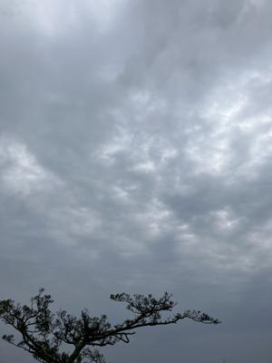
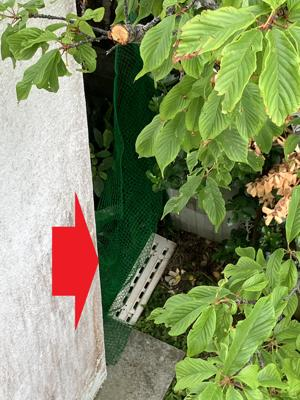
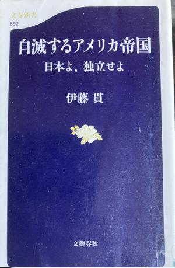

うるがいの話 ある日
最新: 猫除けネット【うるがいの話 ある日】とは 一日だけのプログです
『うるがいの話』の最新一日だけのプログで、通信料が少なく経済的だ。カニの画像をクリックすると全ての日付が載る『うるがいの話』サイトを表示します
|
|
【うるがいの話】 うるがい(ｳﾙｶﾞｲ urugai)とは、『もずくがに』の名前でとても大きくなります。 |
|---|---|
|
|
【カミマヤーの話】 猫のことを方言でマヤーといいます。カミマヤー（kamimayaa）とは、神の猫のことです。 |
|
【たながぁの音楽】 たながぁ（ﾀﾅｶﾞｰ tanagaa）とは手長えびのことで、何種類かあり大きいのは車 エビぐらいになります。 |

|
【ぶながぁの話】 ぶながぁ(ﾌﾞﾅｶﾞｰ bunagaa)とは、赤い髪の毛、赤い身体、そして身長は１ｍ２０ｃｍ ぐらい、川の蟹を食べているの目撃された。場所は沖縄県国頭郡大宜味村のと ある村僕の隣近所に住んでいる爺さんから、聞いた話です。 |
|
|
【ギーマの話】 ギーマ(giima)とは、山原の里山に咲くスズランに似た、 花を付けます。実は食べられます、 気が付くと口の周りが紫になっています。 |
2026年04月07日 (火）猫除けネット
15:47

裏庭への通路を２か所で、猫除けネットを設置した。表側の一
か所だけだと完全でなく、裏側から裏庭に侵入しフンをするの
です。しばらく、これで様子をみます。なんか、ホルムズ海峡
みたいで・・・・

とある本を借りましたが、読みませんでした。読まずとも。

夜仕事先から家に寄ったコドモ、仕事で荷物を出し入れをして
いる時、誤って頭をぶつけて血が出たと、シャツの襟も血で汚
れていた。病院へ、行くには微妙な程度だったのでとりあえず
マキロンで、血をふき取った。しばらく、様子をみるが、マ大
丈夫だろうということにした。建設現場でアルバイトをした経
験のある私、ヘルメットをコドモに薦めた。中学生のとき、友
達と海へ向かって石の投げ合いをして遊んだ時、前にいた友達
の石が、私の頭に当たって頭から血が、タラリと出た。驚いた
友達は、現場から逃げていった。そういう経験がるので、あま
り驚かないのですよ。